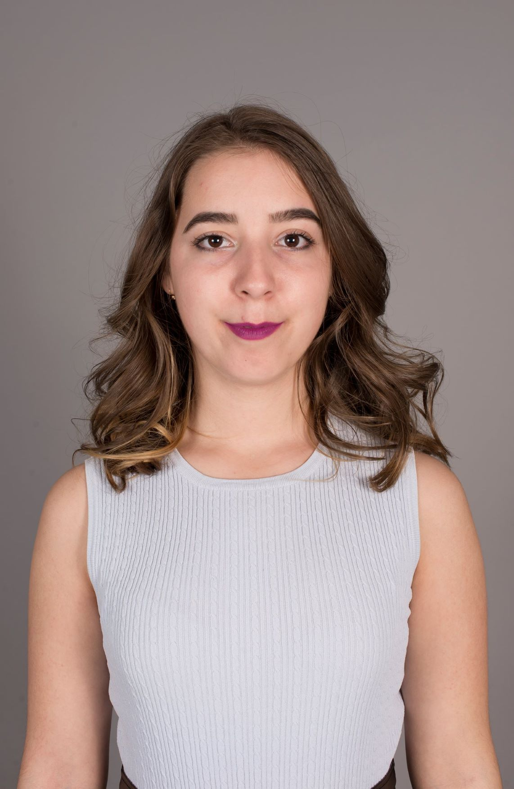

Alexandras Portfolio

Education
2019-2023: University of Tübingen
- 2019-2020 International Business, Bachelor of Arts,not finished
- 2020-present day Media Studies, Bachelor of Arts
2012-2016: National College "Ioan Slavici Satu Mare"
- 9th-12th grade
- Grade of the final exam: 9,06/10
Work Experience
11.23-Present: Call Center
- Customer Service at TAS AG, remote
09.2018-07.2023: Sales Person
- In Germany at New Yorker GmbH, Tübingen
- Responsibilities: customer service, money cash, management responsibilities
2016: Sewing
- For a Romanian designer
- Help in sewing and designing bridal dresses
2015-2017: Product Promoter
- At a Romania Company
- Promoting different products in supermarkets
- Responisbilities: customer service, product promoting and selling
Languages
- Romanian- Native Language
- English- Fluent
- German- Fluent
- Spanish- Fluent
Skills
- Driving
- Communication
- Microsoft Office
- Python- Beginner, Certificated
- Davinci Resolve
- Fast Learning
Hobbies
Contact Me